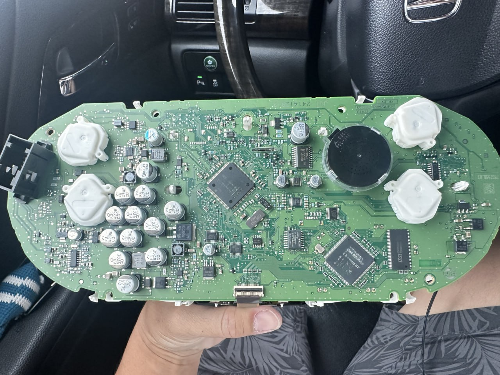
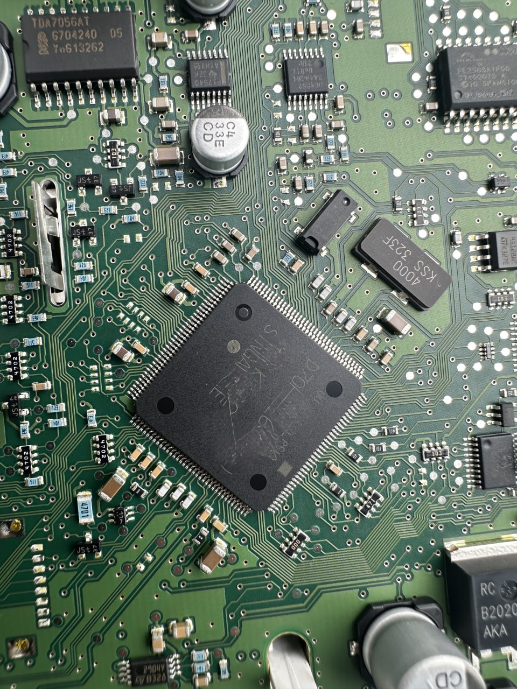

職人視角：拆解後的 MQB 儀表板底層電路架構

核心所在：存放防盜授權數據的 MCU 微控制器
什麼是 MQB 系統？
MQB（Modularer Querbaukasten）是福斯集團（VAG）廣泛應用於 VW, Skoda, Audi 等車系的橫置引擎模組化平台。這套系統不僅優化了車體結構，更在數位化與防盜安全上達到了新的高度。然而，對車主而言，這也意味著更複雜的維護邏輯。
核心技術：當儀表板變成了「數位鎖頭」
在傳統車款中，防盜數據通常存放於獨立的 IMMO 模組或引擎電腦中。但在 MQB 架構下，防盜晶片數據被高度整合進儀表板（Dashboard）的微控制器中。
數據深度綁定（Data Binding）
鑰匙的授權代碼與儀表板內的 MCU（如圖片所示的精密晶片）進行強加密對接。車輛發動時，儀表板不只是顯示轉速與時速，它更扮演著「防盜守門員」的角色，負責驗證鑰匙的合法性。
為什麼「備份」比「全丟救援」重要得多？
面對 MQB 這類高階加密系統，極致核心始終建議「預防勝於治療」。原因有三：
1. 數據獲取的難度差異
在有一支工作鑰匙的情況下，我們可以透過 OBD 介面在相對輕量的負擔下讀取授權數據；一旦全丟（All Keys Lost），則可能需要拆解儀表板進行底層數據讀取，工時與風險皆會攀升。
2. 原廠救援的昂貴代價
原廠針對 MQB 鑰匙遺失通常要求「更換整組儀表板」或「長時間德國訂單等待」，費用動輒數萬台幣，且車輛必須拖吊回廠，造成極大的用車不便。
3. 行動救援的技術壁壘
極致核心引進了全球頂尖的解碼設備，能針對 MQB 儀表進行現場數據重構。雖然我們具備救援能力，但備份鑰匙的成本僅需全丟救援的一小部分，對車主最為划算。
職人的忠告：數據是唯一的啟動憑證
「看著儀表板上密密麻麻的電子元件，每一顆晶片都承載著您的愛車靈魂。別等靈魂鎖死後才尋求救贖，提前為您的 MQB 車款備份第二支鑰匙，才是最理智的投資。」